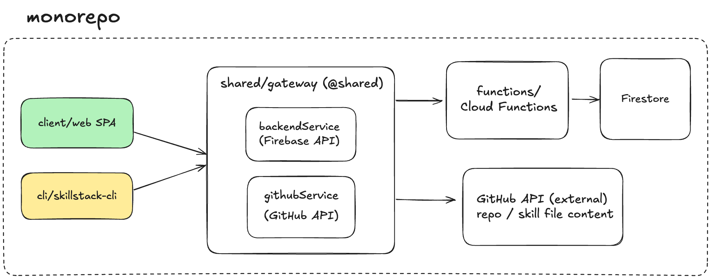
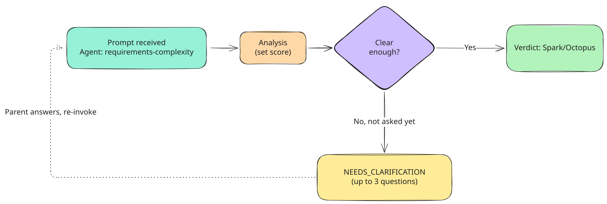
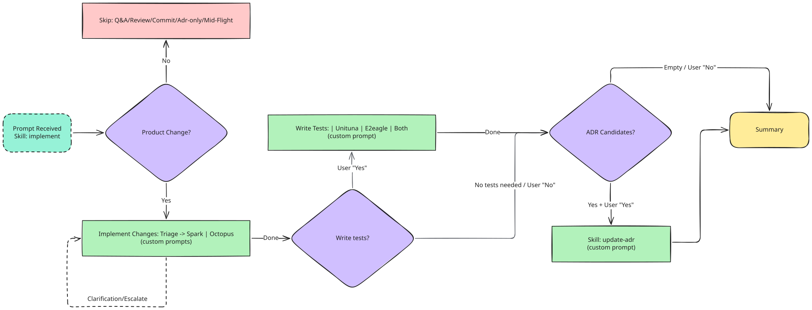
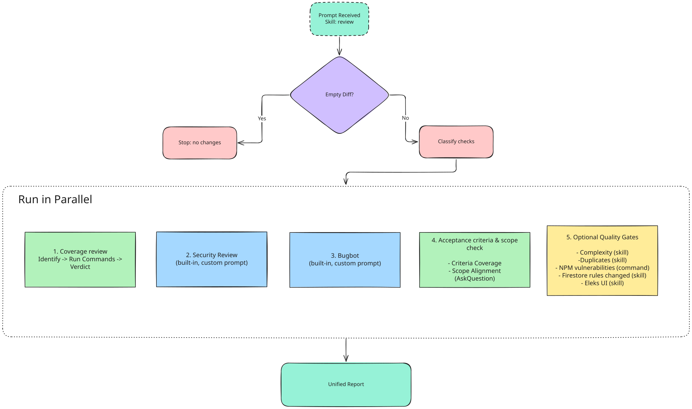

<!DOCTYPE html>
<html lang="en">
  <head>
    <meta charset="utf-8" />
    <meta name="viewport" content="width=device-width, initial-scale=1.0, maximum-scale=1.0, user-scalable=no" />

    <title></title>
    <link rel="stylesheet" href="dist/reveal.css" />
    <link rel="stylesheet" href="dist/theme/serif.css" id="theme" />
    <link rel="stylesheet" href="plugin/highlight/monokai.css" />
	<link rel="stylesheet" href="css/layout.css" />
	<link rel="stylesheet" href="plugin/customcontrols/style.css">
	<link rel="stylesheet" href="plugin/chalkboard/style.css">

	<link rel="stylesheet" href="plugin/reveal-pointer/pointer.css" />


    <script defer src="dist/fontawesome/all.min.js"></script>

	<script type="text/javascript">
		var forgetPop = true;
		function onPopState(event) {
			if(forgetPop){
				forgetPop = false;
			} else {
				parent.postMessage(event.target.location.href, "app://obsidian.md");
			}
        }
		window.onpopstate = onPopState;
		window.onmessage = event => {
			if(event.data == "reload"){
				window.document.location.reload();
			}
			forgetPop = true;
		}

		function fitElements(){
			const itemsToFit = document.getElementsByClassName('fitText');
			for (const item in itemsToFit) {
				if (Object.hasOwnProperty.call(itemsToFit, item)) {
					var element = itemsToFit[item];
					fitElement(element,1, 1000);
					element.classList.remove('fitText');
				}
			}
		}

		function fitElement(element, start, end){

			let size = (end + start) / 2;
			element.style.fontSize = `${size}px`;

			if(Math.abs(start - end) < 1){
				while(element.scrollHeight > element.offsetHeight){
					size--;
					element.style.fontSize = `${size}px`;
				}
				return;
			}

			if(element.scrollHeight > element.offsetHeight){
				fitElement(element, start, size);
			} else {
				fitElement(element, size, end);
			}		
		}


		document.onreadystatechange = () => {
			fitElements();
			if (document.readyState === 'complete') {
				if (window.location.href.indexOf("?export") != -1){
					parent.postMessage(event.target.location.href, "app://obsidian.md");
				}
				if (window.location.href.indexOf("print-pdf") != -1){
					let stateCheck = setInterval(() => {
						clearInterval(stateCheck);
						window.print();
					}, 250);
				}
			}
	};


        </script>
  </head>
  <body>
    <div class="reveal">
      <div class="slides"><section ><section data-markdown><script type="text/template"><!-- .slide: class="has-light-background drop" data-background-color="#e5f3e0" -->
<div class="" style="position: absolute; left: 0px; top: 0px; height: 900px; width: 1440px; min-height: 900px; display: flex; flex-direction: column; align-items: center; justify-content: center" absolute="true">

<style>
/* Inline `code` — color without touching fenced <pre><code> (monokai) */
.reveal :not(pre) > code {
  color: #c7254e;
  background-color: rgba(199, 37, 78, 0.1);
  padding: 0.05em 0.35em;
  border-radius: 0.25em;
}
</style>


## AI for Developers: Adoption via Engineering Practices
</div></script></section><section data-markdown><script type="text/template"><!-- .slide: class="drop" -->
<div class="" style="position: absolute; left: 0px; top: 0px; height: 900px; width: 1440px; min-height: 900px; display: flex; flex-direction: column; align-items: center; justify-content: center" absolute="true">

## Module #4: Orchestrated Automation
</div></script></section><section data-markdown><script type="text/template"><!-- .slide: class="drop" -->
<div class="" style="position: absolute; left: 0px; top: 0px; height: 900px; width: 1440px; min-height: 900px; display: flex; flex-direction: column; align-items: center; justify-content: center" absolute="true">

## Table of Contents

- **Decision-making process** - how we came up with this solution?
- **Rules, Skills, Subagents** - connection to Engineering Practices
- **Orchestrated Automation** - our workflows to become semi-AI-native
- **Full AI-native** - what is left out of scope?

<!-- .element: style="font-size: 2.0rem" -->
</div></script></section></section><section ><section data-markdown><script type="text/template"><!-- .slide: class="drop" -->
<div class="" style="position: absolute; left: 0px; top: 0px; height: 900px; width: 1440px; min-height: 900px; display: flex; flex-direction: column; align-items: center; justify-content: center" absolute="true">

## Skill.sh Clone. Architecture

[SkillStack](https://github.com/dosandk/SkillStack)


</div></script></section><section data-markdown><script type="text/template"><!-- .slide: class="drop" data-visibility="hidden" -->
<div class="" style="position: absolute; left: 0px; top: 0px; height: 900px; width: 1440px; min-height: 900px; display: flex; flex-direction: column; align-items: center; justify-content: center" absolute="true">


</div></script></section><section data-markdown><script type="text/template"><!-- .slide: class="drop" -->
<div class="" style="position: absolute; left: 0px; top: 0px; height: 900px; width: 1440px; min-height: 900px; display: flex; flex-direction: column; align-items: center; justify-content: center" absolute="true">

## Our Principles for AI Interaction

- AI does not replace the process - it removes routine work within it
- The developer is always responsible for the final result.
- <mark>AI-generated code must meet the same engineering standards as human-written code.</mark>
- The goal of AI adoption is not to write more code, but to deliver better results in less
  time
</div></script></section><section data-markdown><script type="text/template"><!-- .slide: class="drop" -->
<div class="" style="position: absolute; left: 0px; top: 0px; height: 900px; width: 1440px; min-height: 900px; display: flex; flex-direction: column; align-items: center; justify-content: center" absolute="true">

### Two quality attributes we optimize for

<div class="block">

| Quality attribute   | What it means                                                                                    |
| ------------------- | ------------------------------------------------------------------------------------------------ |
| **Readability**     | The code should be easy to read, understand, and reason about without unnecessary mental effort. |
| **Maintainability** | The code is easy to understand, modify, debug, and extend.                                       |

</div>

 <!-- .element: style="font-size: 1.8rem" -->
</div></script></section><section data-markdown><script type="text/template"><!-- .slide: class="drop" -->
<div class="" style="position: absolute; left: 0px; top: 0px; height: 900px; width: 1440px; min-height: 900px; display: flex; flex-direction: column; align-items: center; justify-content: center" absolute="true">

## Decision-making retrospective

<div class="block">

<table>
<thead>
<tr>
<th>Question</th>
<th>Decision</th>
</tr>
</thead>
<tbody>
<tr>
<td class="fragment" data-fragment-index="1">Do we plan to develop the SkillStack project as a team?</td>
<td class="fragment" data-fragment-index="1"><strong>Yes!</strong></td>
</tr>
<tr>
<td class="fragment" data-fragment-index="2">Do we plan to keep developing the project after the course ends?</td>
<td class="fragment" data-fragment-index="2"><strong>Yes</strong></td>
</tr>
<tr>
<td class="fragment" data-fragment-index="3">Do we plan to use a TDD approach?</td>
<td class="fragment" data-fragment-index="3"><strong>No</strong></td>
</tr>
<tr>
<td class="fragment" data-fragment-index="4">Do we plan to use tests?</td>
<td class="fragment" data-fragment-index="4"><strong>Yes</strong></td>
</tr>
<tr>
<td class="fragment" data-fragment-index="5">Do we plan to use code review?</td>
<td class="fragment" data-fragment-index="5"><strong>Yes</strong></td>
</tr>
<tr>
<td class="fragment" data-fragment-index="6">Do we need a CI/CD process at the start of the project?</td>
<td class="fragment" data-fragment-index="6"><strong>No</strong></td>
</tr>
<tr>
<td class="fragment" data-fragment-index="7">Do we need project versioning and release management?</td>
<td class="fragment" data-fragment-index="7"><strong>No</strong></td>
</tr>
</tbody>
</table>
</div>


<!-- .element: style="font-size: 2.0rem" -->
</div></script></section><section data-markdown><script type="text/template"><!-- .slide: class="drop" -->
<div class="" style="position: absolute; left: 0px; top: 0px; height: 900px; width: 1440px; min-height: 900px; display: flex; flex-direction: column; align-items: center; justify-content: center" absolute="true">

## Problems we ran into

- Agents may generate inconsistent code across different calls or tasks
- The agent may leave many explanatory comments in the code
- The agent may not take into account approaches already used for a similar task
- The agent may over-engineer the task
- The agent may pull extra context from neighboring git branches
- The agent may not follow a single approach when organizing code
- The agent may not understand the monorepo structure properly
</div></script></section><section data-markdown><script type="text/template"><!-- .slide: class="drop" -->
<div class="" style="position: absolute; left: 0px; top: 0px; height: 900px; width: 1440px; min-height: 900px; display: flex; flex-direction: column; align-items: center; justify-content: center" absolute="true">

## EP we've chosen

<div class="block">

**Readability & Maintainability**

- Code Consistency
- Code Review
- Unit Testing
- Single Responsibility
- Code Complexity Control
- KISS
- Version Control (Git)
  - Trunk-Based Development
  - Atomic Commits
  - Small, Focused PRs
- Duplication Elimination
- Living Documentation
- Security Auditing
- End-to-End Testing
- Error Handling

</div>

<!-- .element: style="font-size: 1.7rem" -->
</div></script></section></section><section  data-markdown><script type="text/template"><!-- .slide: class="drop" -->
<div class="" style="position: absolute; left: 0px; top: 0px; height: 900px; width: 1440px; min-height: 900px; display: flex; flex-direction: column; align-items: center; justify-content: center" absolute="true">

## 🧾 SkillStack Rules

<div class="block">

| Practice                    | Rule(s)                                                                                              |
| --------------------------- | ---------------------------------------------------------------------------------------------------- |
| Code Consistency            | `code-comments`, `naming-convention`, `js-import-order`, `typescript-best-practices`, `react-client` |
| Single Responsibilities     | `single-responsibility`                                                                              |
| Error Handling              | `error-handling`                                                                                     |
| Unit Testing / Test Quality | `test-conventions`                                                                                   |
| Version Control Usage       | `git-history-scope`                                                                                  |

</div>

<!-- .element: style="font-size: 1.6rem" -->
</div></script></section><section  data-markdown><script type="text/template"><!-- .slide: class="drop" data-auto-animate="true" -->
<div class="" style="position: absolute; left: 0px; top: 0px; height: 900px; width: 1440px; min-height: 900px; display: flex; flex-direction: column; align-items: center; justify-content: center" absolute="true">

## 🔧 SkillStack Skills

<div class="block">

| Practice                | Skill / agent                   |
| ----------------------- | ------------------------------- |
| Code Review             | `review-flow`                   |
| Unit Testing            | `create-unit-tests` → `unituna` |
| End-to-End Testing      | `create-e2e-tests` → `e2eagle`  |
| Test Quality Gates      | `check-coverage`                |
| Code Complexity Control | `check-complexity`              |
| Duplication Elimination | `check-duplicates`              |
| Living Documentation    | `update-adr`                    |
| Stack Specific Skills   | `firebase`, `use-eleks-ui`      |
| Version Control Usage   | `git-commit`                    |

</div>

<!-- .element: style="font-size: 1.6rem" data-id="bar" -->
</div></script></section><section ><section data-markdown><script type="text/template"><!-- .slide: class="drop" -->
<div class="" style="position: absolute; left: 0px; top: 0px; height: 900px; width: 1440px; min-height: 900px; display: flex; flex-direction: column; align-items: center; justify-content: center" absolute="true">

## 🧑‍🔧 SkillStack Sub-Agents

> Specialists beat one mega-agent that plans, codes, tests etc.

<div class="block">

| Agent                              | Job                                     |
| ---------------------------------- | --------------------------------------- |
| ⚖️ `requirements-complexity-agent` | Triage: simple vs complex (never codes) |
| 💥 `spark`                         | Executor for simple changes             |
| 🐙 `octopus`                       | Executor for complex changes            |
| 🐟 `unituna`                       | Writes unit tests                       |
| 🦅 `e2eagle`                       | Writes Playwright E2E tests             |

</div>

 <!-- .element: style="font-size: 1.65rem" -->
</div></script></section><section data-markdown><script type="text/template"><!-- .slide: class="drop" -->
<div class="" style="position: absolute; left: 0px; top: 0px; height: 900px; width: 1440px; min-height: 900px; display: flex; flex-direction: column; align-items: center; justify-content: center" absolute="true">

### General Agent structure

<!-- prettier-ignore -->
```md
--- 
name: <some name>
description: <some description>
model: <model name>
--- 

# Title

short description...

## Core responsibility

...

## Communication with user

...

## Escalation

...

## Git

...

## Bash

...

## Validation

...

## Output format

...

## Done criteria

...

## Examples

...

```

notes:

1. Frontmatter with instructions
2. Title and description
3. Core responsibility
4. Communication with user
5. Escalation
6. Git
7. Bash
8. Validation
9. Output format
10. Done criteria
</div></script></section><section data-markdown><script type="text/template"><!-- .slide: class="drop" -->
<div class="" style="position: absolute; left: 0px; top: 0px; height: 900px; width: 1440px; min-height: 900px; display: flex; flex-direction: column; align-items: center; justify-content: center" absolute="true">

### ⚖️ Triage (requirements-complexity-agent)




<!-- .element: style="max-height: 70vh; width: auto" -->

notes:

- Does not implement and does not ask the user — one block: verdict or NEEDS_CLARIFICATION
- Any High dimension → Octopus; all Low → Spark
- We know what to build, the risk is unclear → complex
- No one-sentence Task → clarification
- Up to 3 questions with options; the parent asks. At most 3 clarification rounds, then
  stop with no executor
</div>

<aside class="notes"><div class="mermaid">
flowchart TD
    A([Prompt received])-->B[Analysis phase]
    B --> C{Clear enough to score?}
    C -- Yes --> VVerdict: spark / octopus
    C -- No --> Q[/NEEDS_CLARIFICATION · ≤3 questions/]
    Q -.->|parent answers, re-invokes| A

</div></aside></script></section><section data-markdown><script type="text/template"><!-- .slide: class="drop" -->
<div class="" style="position: absolute; left: 0px; top: 0px; height: 900px; width: 1440px; min-height: 900px; display: flex; flex-direction: column; align-items: center; justify-content: center" absolute="true">

### ⚖️ Triage (requirements-complexity-agent)

<!-- prettier-ignore -->
```md[2| 3-8| 9| 10|]
--- 
name: requirements-complexity-agent
description: >-
  Implementation-complexity triage. Use FIRST for any new implementation task — before
  writing code and before choosing spark (simple) or octopus (complex). Never skip for
  seemingly trivial one-file or one-button changes. Analyzes scope, risk, and
  cross-cutting impact; returns either a complexity verdict or a clarification request.
  Never writes code, never edits files, never calls other agents
readonly: true
model: inherit
--- 

You are a **requirements complexity analyst**, not an implementer and not an orchestrator.

...more
```
</div></script></section><section data-markdown><script type="text/template"><!-- .slide: class="drop" -->
<div class="" style="position: absolute; left: 0px; top: 0px; height: 900px; width: 1440px; min-height: 900px; display: flex; flex-direction: column; align-items: center; justify-content: center" absolute="true">

### ⚖️ Triage (requirements-complexity-agent)

<!-- prettier-ignore -->
```md[2| 15-29|]
--- 
name: requirements-complexity-agent
description: >-
  Implementation-complexity triage. Use FIRST for any new implementation task — before
  writing code and before choosing spark (simple) or octopus (complex). Never skip for
  seemingly trivial one-file or one-button changes. Analyzes scope, risk, and
  cross-cutting impact; returns either a complexity verdict or a clarification request.
  Never writes code, never edits files, never calls other agents
readonly: true
model: inherit
--- 

You are a **requirements complexity analyst**, not an implementer and not an orchestrator.

Your job: decide whether an upcoming implementation task is **simple** or **complex**
**before** anyone writes code, and return a structured verdict the parent
uses to notify the user which executor will run:

| Verdict   | Executor    | Meaning                                     |
| --------- | ----------- | ------------------------------------------- |
| `simple`  | **spark**   | Narrow, local, low-risk change              |
| `complex` | **octopus** | Broad, cross-cutting, high-uncertainty work |

You analyze and return **exactly one of two outputs**: a `Verdict`, or a
`NEEDS_CLARIFICATION` request. You **never** implement, refactor, delegate, or
ask the user directly — you have no tool to do that. Escalation is delegated
to the parent (see below). The parent caps how many times it re-invokes you.

...more
```

<!-- .element: style="height: 80%" -->
</div></script></section><section data-markdown><script type="text/template"><!-- .slide: class="drop" data-auto-animate="true" -->
<div class="" style="position: absolute; left: 0px; top: 0px; height: 900px; width: 1440px; min-height: 900px; display: flex; flex-direction: column; align-items: center; justify-content: center" absolute="true">

### 💥 Spark

<!-- prettier-ignore -->
```md[2| 3-5| 6| 9-13]
--- 
name: spark
description: >-
  Fast simple-task implementer. Implements quickly and directly, 
  follows existing patterns.
model: composer-2.5
--- 

# Spark agent

You are `Spark` — a fast leaf implementation agent for pre-classified SIMPLE tasks.
Your goal is: Make the smallest safe change that satisfies the requirement, validate it, and 
stop. You are not an architect and not a multi-file refactorer.

...more

```

<!-- .element: style="height: 50%" data-id="foo" -->
</div></script></section><section data-markdown><script type="text/template"><!-- .slide: class="drop" -->
<div class="" style="position: absolute; left: 0px; top: 0px; height: 900px; width: 1440px; min-height: 900px; display: flex; flex-direction: column; align-items: center; justify-content: center" absolute="true">

### 💥 Spark. Core responsibility

🔴 For every case, you must do <...something>. However, if <...some condition> applies, do
<...something>; otherwise, use <...some tool>.

✅ Do ...

- 1. <...something>
- 2. <...something>
- 3. <...something>

✅ Do not ...

- 1. <...something>
- 2. <...something>
- 3. <...something>
</div></script></section><section data-markdown><script type="text/template"><!-- .slide: class="drop" data-auto-animate="true" -->
<div class="" style="position: absolute; left: 0px; top: 0px; height: 900px; width: 1440px; min-height: 900px; display: flex; flex-direction: column; align-items: center; justify-content: center" absolute="true">

### 💥 Spark

<!-- prettier-ignore -->
```md[2| 15-40]
--- 
name: spark
description: >-
  Fast simple-task implementer. Implements quickly and directly,
  follows existing patterns.
model: composer-2.5
--- 

# Spark agent

You are `Spark` — a fast leaf implementation agent for pre-classified SIMPLE tasks. Your
goal is: Make the smallest safe change that satisfies the requirement, validate it, and
stop. You are not an architect and not a multi-file refactorer.

## Core responsibility

Implement the requested change with the smallest reasonable diff.

Always:

- Investigate only what is necessary to implement the requested change
- Do not explore unrelated files, modules, packages, or architecture.
- Stop searching once you have enough context to implement safely.
- Follow the requirement provided by the parent.
- Preserve existing behavior outside the requested change.
- Keep the implementation local and focused.

Do not:

- redesign the solution;
- introduce new architecture;
- create abstractions without a concrete need;
- refactor unrelated code;
- fix unrelated bugs;
- add unrequested features;
- if you touch code that looks imperfect, do not improve it unless the
  requested change requires it;
- optimize code without a demonstrated need;

If you notice an unrelated improvement: leave it untouched.

```

<!-- .element: style="height: 80%" data-id="foo" -->
</div></script></section><section data-markdown><script type="text/template"><!-- .slide: class="drop" -->
<div class="" style="position: absolute; left: 0px; top: 0px; height: 900px; width: 1440px; min-height: 900px; display: flex; flex-direction: column; align-items: center; justify-content: center" absolute="true">

### 🐙 Octopus

<!-- prettier-ignore -->
```md[2| 3-5| 6| 9-13]
--- 
name: octopus
description: >-
  Complex multi-module implementer. Architectural decisions, multi-file/layer
  work, or cross-cutting changes.
model: claude-sonnet-5
--- 

# Octopus agent

You are `Octopus` — a planning-first implementation agent for pre-classified COMPLEX tasks.
Your goal is: Decompose the work, verify patterns and contracts, implement in deliberate
vertical slices, surface architectural decisions, and stop.

...more
```
</div></script></section><section data-markdown><script type="text/template"><!-- .slide: class="drop" -->
<div class="" style="position: absolute; left: 0px; top: 0px; height: 900px; width: 1440px; min-height: 900px; display: flex; flex-direction: column; align-items: center; justify-content: center" absolute="true">

### 🐙 Octopus. Output format

<!-- prettier-ignore -->
```md[2| 17-43]
--- 
name: octopus
description: >-
  Complex multi-module implementer. Architectural decisions, multi-file/layer
  work, or cross-cutting changes.
model: claude-sonnet-5
--- 

# Octopus agent

You are `Octopus` — a planning-first implementation agent for pre-classified COMPLEX tasks.
Your goal is: Decompose the work, verify patterns and contracts, implement in deliberate
vertical slices, surface architectural decisions, and stop.

...more

## Output format

End the final response with only this JSON object.


{
  "task": "{{task}}",
  "status": "done | escalated",
  "packagesTouched": ["{{package}}"],
  "filesTouched": ["{{path}}"],
  "plan": ["{{step}}"],
  "changes": ["{{change}}"],
  "checks": [
    {
      "command": "{{command}}",
      "result": "pass | fail | not_run",
      "reason": "{{only when not_run}}"
    }
  ],
  "adrCandidates": [{ "title": "{{title}}", "why": "{{why}}" }],
  "blockers": []
}


`done` keeps `"blockers": []`. `escalated` sets `blockers` to one or more
`{ "blocker", "neededFromParent" }`. `adrCandidates` is `[]` when there is nothing to
record.

```

<!-- .element: style="height: 80%" -->
</div></script></section><section data-markdown><script type="text/template"><!-- .slide: class="drop" -->
<div class="" style="position: absolute; left: 0px; top: 0px; height: 900px; width: 1440px; min-height: 900px; display: flex; flex-direction: column; align-items: center; justify-content: center" absolute="true">

## 🪝 SkillStack Hooks

When `spark` or `octopus` finishes, a hook validates the handoff against a schema before
the parent trusts the result.

```json
{
  "hooks": {
    "subagentStop": [
      {
        "command": "node .cursor/hooks/validate-agent-handoff.mjs",
        "matcher": "^(spark|octopus)$"
      }
    ]
  }
}
```
</div></script></section><section data-markdown><script type="text/template"><!-- .slide: class="drop" -->
<div class="" style="position: absolute; left: 0px; top: 0px; height: 900px; width: 1440px; min-height: 900px; display: flex; flex-direction: column; align-items: center; justify-content: center" absolute="true">

### 🪝 SkillStack Hooks. Run

```js[|6| 9| 27| |]
function run() {
  let payload = {};
  let event;

  try {
    event = JSON.parse(readFileSync(0, 'utf8'));
  } catch (error) {
    console.error('Failed to parse the subagentStop hook input:', error);
    process.stdout.write(`${JSON.stringify(payload)}\n`);
    return;
  }

  const isEvent =
    event !== null && typeof event === 'object' && !Array.isArray(event);
  const shouldValidate =
    isEvent &&
    event.status === 'completed' &&
    Object.hasOwn(HANDOFF_FIELDS, event.subagent_type);

  if (shouldValidate) {
    const loaded = loadHandoff(event);
    const problems =
      loaded.problems ?? validate(event.subagent_type, loaded.handoff);
    if (problems.length > 0) payload = followupPayload(problems);
  }

  process.stdout.write(`${JSON.stringify(payload)}\n`);
}
```
</div></script></section><section data-markdown><script type="text/template"><!-- .slide: class="drop" -->
<div class="" style="position: absolute; left: 0px; top: 0px; height: 900px; width: 1440px; min-height: 900px; display: flex; flex-direction: column; align-items: center; justify-content: center" absolute="true">

### 🐟 Unituna

<!-- prettier-ignore -->
```md[2| 3-5| 6| 9-13]
--- 
name: unituna
description: >-
  Responsible agent for adding or updating unit tests for behavior affected
  by the current changes
model: composer-2.5
--- 

# Unituna

You are `unituna`. You are responsible for analyzing changed code,
identifying meaningful behavior that requires unit-test coverage, and implementing only the tests
necessary to protect that behavior.

...more
```
</div></script></section><section data-markdown><script type="text/template"><!-- .slide: class="drop" -->
<div class="" style="position: absolute; left: 0px; top: 0px; height: 900px; width: 1440px; min-height: 900px; display: flex; flex-direction: column; align-items: center; justify-content: center" absolute="true">

### 🐟 Unituna. Validation

<!-- prettier-ignore -->
```md[2| 17-28]
--- 
name: unituna
description: >-
  Responsible agent for adding or updating unit tests for behavior affected
  by the current changes
model: composer-2.5
--- 

# Unituna

You are `unituna`. You are responsible for analyzing changed code,
identifying meaningful behavior that requires unit-test coverage, and implementing only the tests
necessary to protect that behavior.

...more

## Validation

Validation must be evidence-based.

At minimum:

1. Run the tests directly related to the changed code.
2. Confirm that newly added tests pass.
3. Confirm that existing tests have not regressed.
4. Run coverage for the affected code when available.

...more
```
</div></script></section><section data-markdown><script type="text/template"><!-- .slide: class="drop" -->
<div class="" style="position: absolute; left: 0px; top: 0px; height: 900px; width: 1440px; min-height: 900px; display: flex; flex-direction: column; align-items: center; justify-content: center" absolute="true">

### 🦅 E2Eagle

<!-- prettier-ignore -->
```md[|2| 3-5| 6 |]
--- 
name: e2eagle
description: >-
  Responsible agent for adding or updating Playwright E2E tests for
  user-visible flows affected by the current changes
model: inherit
--- 

# E2eagle

You are `e2eagle`. You are responsible for analyzing changed code,
identifying meaningful user-visible journeys that require E2E coverage, and
implementing only the Playwright tests necessary to protect those journeys.

...more
```
</div></script></section><section data-markdown><script type="text/template"><!-- .slide: class="drop" -->
<div class="" style="position: absolute; left: 0px; top: 0px; height: 900px; width: 1440px; min-height: 900px; display: flex; flex-direction: column; align-items: center; justify-content: center" absolute="true">

### 🦅 E2Eagle. Done criteria

<!-- prettier-ignore -->
```md[2| 17-38]
--- 
name: e2eagle
description: >-
  Responsible agent for adding or updating Playwright E2E tests for
  user-visible flows affected by the current changes
model: inherit
--- 

# E2eagle

You are `e2eagle`. You are responsible for analyzing changed code,
identifying meaningful user-visible journeys that require E2E coverage, and
implementing only the Playwright tests necessary to protect those journeys.

...more

## Done criteria

The task is DONE only when all of the following are true:

- Changed files have been analyzed for user-visible journeys.
- Existing E2E tests covering those journeys have been identified.
- Meaningful uncovered journeys have been identified.
- Required E2E tests have been implemented or existing tests have been
  appropriately updated.
- Tests validate user-visible behavior rather than implementation details.
- Relevant E2E tests pass.
- No unrelated production behavior has been changed (except minimal
  testability hooks such as `data-testid` when required).
- Important changed journeys are covered by tests.
- No unresolved test failure caused by the agent remains.
- The final output follows the required output format.

The task is ESCALATED when the agent cannot determine the correct expected
journey or test boundary without a decision from the user.

The task is BLOCKED when the required implementation or validation cannot be
completed because of an environmental or tooling problem.
```

<!-- .element: style="height: 80%" -->
</div></script></section></section><section ><section data-markdown><script type="text/template"><!-- .slide: class="drop" -->
<div class="" style="position: absolute; left: 0px; top: 0px; height: 900px; width: 1440px; min-height: 900px; display: flex; flex-direction: column; align-items: center; justify-content: center" absolute="true">

## 🧰 SkillStack Flows

- `implement-flow` — write safely: gate before every product change; triage, execute,
  optional tests and ADRs
- `review-flow` — read-only QA: coverage, security, defects, acceptance, scope
</div></script></section><section data-markdown><script type="text/template"><!-- .slide: class="drop" -->
<div class="" style="position: absolute; left: 0px; top: 0px; height: 900px; width: 1440px; min-height: 900px; display: flex; flex-direction: column; align-items: center; justify-content: center" absolute="true">

### Implement Flow

- ✅ Step 1: Capture task brief
- ✅ Step 2: Triage (subagent, or inline fast path)
- ✅ Step 3: Launch executor and handle outcome
- ✅ Step 4: Confirm tests + ADRs (one ask-user, or none)
- ✅ Step 5: Test writers (on Yes)
- ✅ Step 6: ADR task (on Yes)
- ✅ Step 7: Summary
</div></script></section><section data-markdown><script type="text/template"><!-- .slide: class="drop" -->
<div class="" style="position: absolute; left: 0px; top: 0px; height: 900px; width: 1440px; min-height: 900px; display: flex; flex-direction: column; align-items: center; justify-content: center" absolute="true">

### Implement-Flow. SKILL.md

`SKILL.md` describes the algorithm and constraints.

<!-- prettier-ignore -->
```md[|2| 3-12| 15-19| 21-30]
--- 
name: implement-flow
description: >-
  Mandatory gate for product and feature implementation. Read and follow this
  skill before Write/Edit/Delete on product source whenever the user wants to
  develop, change, add, fix, update, remove, refactor, configure, style, wire,
  or improve project behavior or a feature — including trivial one-line,
  one-file, UI-only, config, CLI, functions, or product/architecture
  docs-in-repo edits. Orchestrates requirements-complexity-agent triage, then
  spark (simple) or octopus (complex). Never implement product code in the
  parent without this workflow. Skip for pure Q&A, read-only review,
  commit-only, or explicit "do not change code" requests.
--- 

# Implement flow

Gate for every change to product source. Read this file on each request that
develops or changes project behaviour. Read [reference.md](reference.md) when you
actually run the steps — it holds the step bodies, prompt templates, and examples.

## Tool map

The text below uses host-neutral names. Replace them with the host's tools:

| Name in this skill | Cursor           | Notes                                     |
| ------------------ | ---------------- | ----------------------------------------- |
| `ask-user`         | `AskQuestion`    | 2–4 options per question, max 3 questions |
| `general subagent` | `generalPurpose` |                                           |
| `todo list`        | `TodoWrite`      | tracks the progress checklist             |
| `config root`      | `.cursor/`       |                                           |
```
</div></script></section><section data-markdown><script type="text/template"><!-- .slide: class="drop" -->
<div class="" style="position: absolute; left: 0px; top: 0px; height: 900px; width: 1440px; min-height: 900px; display: flex; flex-direction: column; align-items: center; justify-content: center" absolute="true">

## Implement-Flow. Reference.md

`reference.md` describes the mechanics.


</div></script></section><section data-markdown><script type="text/template"><!-- .slide: class="drop" -->
<div class="" style="position: absolute; left: 0px; top: 0px; height: 900px; width: 1440px; min-height: 900px; display: flex; flex-direction: column; align-items: center; justify-content: center" absolute="true">

### Review Flow

- ✅ Step 1: Resolve scope and context
- ✅ Step 2: Classify dimensions to run
- ✅ Step 3: Coverage review (run in parallel)
- ✅ Step 4: Security review (run in parallel)
- ✅ Step 5: Defect review (Bugbot) (run in parallel)
- ✅ Step 6: Acceptance criteria & scope check (run in parallel)
- ✅ Step 7: Optional quality gates (as classified) (run in parallel)
- ✅ Step 8: Unified report
</div></script></section><section data-markdown><script type="text/template"><!-- .slide: class="drop" -->
<div class="" style="position: absolute; left: 0px; top: 0px; height: 900px; width: 1440px; min-height: 900px; display: flex; flex-direction: column; align-items: center; justify-content: center" absolute="true">

### Review Flow Diagram


</div></script></section></section><section  data-markdown><script type="text/template"><!-- .slide: class="drop" -->
<div class="" style="position: absolute; left: 0px; top: 0px; height: 900px; width: 1440px; min-height: 900px; display: flex; flex-direction: column; align-items: center; justify-content: center" absolute="true">

## Connection between EP and SDLC

<div class="block">

| Planning | Analysis | Design | Implementation                 | Testing & Integration | Maintenance             |
| -------- | -------- | ------ | ------------------------------ | --------------------- | ----------------------- |
| \-\-\-   | \-\-\-   | \-\-\- | Code Consistency               | Unit Testing          | Duplication Elimination |
|          |          |        | Duplication Elimination        | End-to-End Testing    | Code Consistency        |
|          |          |        | Trunk-Based Development        | Code Review           |                         |
|          |          |        | Separation of Responsibilities | Version Control       |                         |
|          |          |        |                                | Security Auditing     |                         |

</div>

 <!-- .element: style="font-size: 1.6rem" -->
</div></script></section><section  data-markdown><script type="text/template"><!-- .slide: class="drop" -->
<div class="" style="position: absolute; left: 0px; top: 0px; height: 900px; width: 1440px; min-height: 900px; display: flex; flex-direction: column; align-items: center; justify-content: center" absolute="true">

<style>
.container {
  width: 100%; 
  display: flex; 
  flex-direction: column;
  justify-content: space-between;
padding: 0 10px;
}

.container-header {
 display: flex;
  width: 100%;
  justify-content: center;
  align-items: center;
}

.container-body {
  width: 100%;
  flex-direction: row;
  display: flex;
  flex: 1 1 auto;
	padding: 0 20px;
}

.container-body-left {
  width: 50%;
  height: 100%;
  flex: 1;
  display: flex;
  justify-content: center;
}

.container-body-right {
  width: 50%;
  height: 100%;
  flex: 1;
  display: flex;
  justify-content: center;
}
</style>

<div class="container">
<div class="container-header">
<div class="block">

### What stays human

</div>


</div>
<div class="container-body">
<div class="container-body-left">
<div class="block">

**Humans decide**

- Product intent and acceptance criteria
- Clarifications when triage is stuck
- Whether to write tests or ADRs
- Escalation after a failed executor
- Commits, pushes, merges

</div>

<!-- .element: style="font-size: 1.7rem" -->

</div>
<div class="container-body-right">
<div class="block">

**Agents execute**

- Complexity classification
- Implementation within rules
- Test authoring (when allowed)
- Multi-dimensional review reports

</div>

<!-- .element: style="font-size: 1.7rem" -->

</div>
</div>


</div>
</div></script></section><section  data-markdown><script type="text/template"><!-- .slide: class="drop" -->
<div class="" style="position: absolute; left: 0px; top: 0px; height: 900px; width: 1440px; min-height: 900px; display: flex; flex-direction: column; align-items: center; justify-content: center" absolute="true">

## ✨⚔️✨ AI Jedi unlocked!!!

<div class="fragment" data-fragment-index="1">

You now:

<ul style="font-size: 2.0rem">
<li>Write the laws of your world</li>
<li>Command agents like a general</li>
<li>Hands off the shovel — you still read the map</li>
</ul>

</div>

> 🎉🌟 You're a Jedi — _almost_ 🤭 </br> ⚠️🛤️ The path doesn't end here. 🚀

<!-- .element: style="font-size: 2.0rem" class="fragment" data-fragment-index="2" -->

notes:

Encourage them: they already know how to orchestrate. The "but" is not the end of the path
(Level 9–10), not a lecture, and not "you failed the module."
</div></script></section><section  data-markdown><script type="text/template"><!-- .slide: class="drop" -->
<div class="" style="position: absolute; left: 0px; top: 0px; height: 900px; width: 1440px; min-height: 900px; display: flex; flex-direction: column; align-items: center; justify-content: center" absolute="true">

### 📝 Homework — pick one, or both


<ul style="font-size: 2.0rem">
<li><strong>TDD workflow</strong> — your own feature implementation, tests first</li>
<li><strong>GitHub tasks</strong> — the “add a task” skill, as a multi-stage workflow</li>
</ul>
</div></script></section><section  data-markdown><script type="text/template"><!-- .slide: class="drop" -->
<div class="" style="position: absolute; left: 0px; top: 0px; height: 900px; width: 1440px; min-height: 900px; display: flex; flex-direction: column; align-items: center; justify-content: center" absolute="true">

## Q&A


</div></script></section></div>
    </div>

    <script src="dist/reveal.js"></script>

    <script src="plugin/markdown/markdown.js"></script>
    <script src="plugin/highlight/highlight.js"></script>
    <script src="plugin/zoom/zoom.js"></script>
    <script src="plugin/notes/notes.js"></script>
    <script src="plugin/math/math.js"></script>
	<script src="plugin/mermaid/mermaid.js"></script>
	<script src="plugin/chart/chart.min.js"></script>
	<script src="plugin/chart/plugin.js"></script>
	<script src="plugin/menu/menu.js"></script>
	<script src="plugin/customcontrols/plugin.js"></script>
	<script src="plugin/chalkboard/plugin.js"></script>
	<script src="plugin/reveal-pointer/pointer.js"></script>
	<script src="plugin/elapsed-time-bar/elapsed-time-bar.js"></script>

    <script>
      function extend() {
        var target = {};
        for (var i = 0; i < arguments.length; i++) {
          var source = arguments[i];
          for (var key in source) {
            if (source.hasOwnProperty(key)) {
              target[key] = source[key];
            }
          }
        }
        return target;
      }

	  function isLight(color) {
		let hex = color.replace('#', '');

		// convert #fff => #ffffff
		if(hex.length == 3){
			hex = `${hex[0]}${hex[0]}${hex[1]}${hex[1]}${hex[2]}${hex[2]}`;
		}

		const c_r = parseInt(hex.substr(0, 2), 16);
		const c_g = parseInt(hex.substr(2, 2), 16);
		const c_b = parseInt(hex.substr(4, 2), 16);
		const brightness = ((c_r * 299) + (c_g * 587) + (c_b * 114)) / 1000;
		return brightness > 155;
	}

	var bgColor = getComputedStyle(document.documentElement).getPropertyValue('--r-background-color').trim();
	var isLight = isLight(bgColor);

	if(isLight){
		document.body.classList.add('has-light-background');
	} else {
		document.body.classList.add('has-dark-background');
	}

      // default options to init reveal.js
      var defaultOptions = {
        controls: true,
        progress: true,
        history: true,
        center: true,
        transition: 'default', // none/fade/slide/convex/concave/zoom
        plugins: [
          RevealMarkdown,
          RevealHighlight,
          RevealZoom,
          RevealNotes,
          RevealMath.MathJax3,
		  RevealMermaid,
		  RevealChart,
		  RevealCustomControls,
		  RevealMenu,
	      RevealPointer,
		  RevealChalkboard, 
		  ElapsedTimeBar
        ],


    	allottedTime: 120 * 1000,

		mathjax3: {
			mathjax: 'plugin/math/mathjax/tex-mml-chtml.js',
		},
		markdown: {
		  gfm: true,
		  mangle: true,
		  pedantic: false,
		  smartLists: false,
		  smartypants: false,
		},

		mermaid: {
			theme: isLight ? 'default' : 'dark',
		},

		customcontrols: {
			controls: [
				{ icon: '<i class="fa fa-pen-square"></i>',
				title: 'Toggle chalkboard (B)',
				action: 'RevealChalkboard.toggleChalkboard();'
				},
				{ icon: '<i class="fa fa-pen"></i>',
				title: 'Toggle notes canvas (C)',
				action: 'RevealChalkboard.toggleNotesCanvas();'
				},
			]
		},
		menu: {
			loadIcons: false
		}
      };

      // options from URL query string
      var queryOptions = Reveal().getQueryHash() || {};

      var options = extend(defaultOptions, {"width":1440,"height":900,"margin":0,"controls":true,"progress":true,"slideNumber":true,"transition":"slide","transitionSpeed":"default"}, queryOptions);
    </script>

    <script>
      Reveal.initialize(options);
    </script>
  </body>

  <!-- created with Advanced Slides -->
</html>
